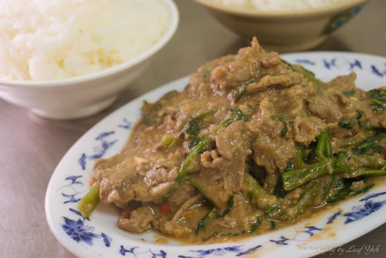
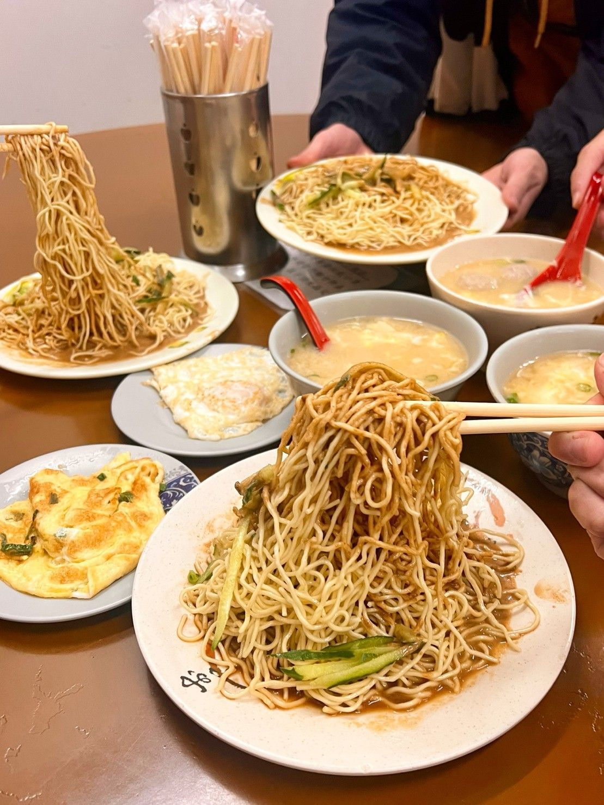

桃園
桃園市擁有多元的文化，加上北橫豐富的山水景觀、兩蔣文化園區的獨特歷史文化及「草花王國的故鄉」、「千塘之鄉」等美名，成就桃園為觀光大市，也因這些屬於桃園特別的風華面貌，讓民眾在此相遇，留下了精彩回憶。
近兩年來，「兩蔣文化園區」每年吸引超過300萬以上的觀光人潮，這是桃園市政府，創新加值服務整合的成果，將地方特色變成獨一無二的活動慶典，並引進民間創意及優質服務，從無到有的改變，忠實的紀錄下一點一滴，讓所有的遊客得以親身體驗，這正是臺灣積極發展地方特色的另一項「臺灣經驗」！
除了兩蔣文化園區，桃園也有很多的地方特色等待我們發掘，例如「客家文化」、「眷村體驗」、「農村生活」、「步道」、「鐵馬遊」及「產業體驗」等，我們都將努力發掘更多的在地價值，希望成為下一個吸引遊客的熱門景點，也是下一個「相遇在桃園」的故事。
永川牛肉麵
(桃園市中壢區民權路61-1號)
位於桃園中壢的【永川牛肉麵】是當時隨著國民政府來台的老兵所開的老店，湯頭屬於微辣的川味紅燒重口味，
牛腱肉滷得入味份量也給大方，配上一瓢桌上的酸菜味道更是合拍。麵條厚實Ｑ彈不軟爛，吃不夠還可以免費加湯加麵，
即使是大胃王也能夠滿足。全年無休24小時營業，無論宵夜正餐都能來上一碗，另外建議點餐時可要求店家將湯頭做清淡些會比較符合大眾口味喔！

忠貞米甘
(桃園市中壢區中正五路210號)
同屬雲南滇緬泰小吃的【忠貞米甘】也在附近，招牌主食米干口感Ｑ彈米干成分純正，
湯頭屬於清爽型，加上點綴的酸菜有畫龍點睛效果，再配上吸附湯汁的半熟蛋非常加分。小菜部分經典的「大薄片」、
冰涼的「豌豆粉」等必點以外別忘了加上店家提供的各式擺夷辣椒粉、酒泡辣椒等變化吃法，飯後再來一份常常完售消暑甜品「米涼蝦」
，有如縮小版的甜米苔目甜湯獨具特色。

角板山老店家小吃
(桃園市復興區中正路7號)
位於桃園復興的【角板山老店家小吃】賣的是融合客家及泰雅族的特色料理，
菜色從滷肉飯、竹筒飯一直到合菜都有，是遊拉拉山時三五好友聚餐的好選擇。菜色部分可選擇人氣必點的炸香菇、炒山豬肉、客家小炒，
另外在地的土雞、高山高麗菜等山菜也令人回味，整體料理方式偏鹹香重口味非常下飯。 平日營業時間只有短短五小時，假日則營業到晚上，
運氣好還有機會欣賞到素人歌手的現場演唱喔！